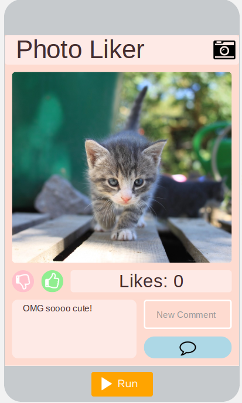
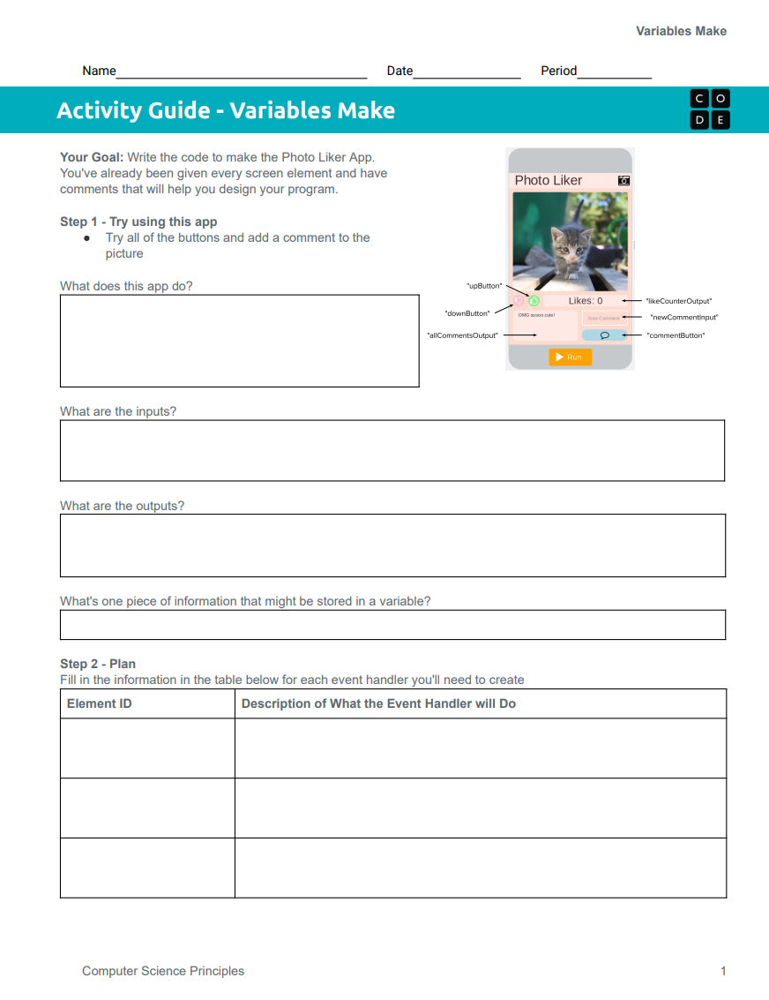

Today you will build an app from scratch, using variables and event handlers to keep track of what the user does.

Today you will write the code for the Photo Liker app. The screen is already designed for you, and the starter code has comments to help you plan your program.
Users can like or dislike the photo and post comments about it. Your code will keep track of the likes and the comments.
When you open the level, start by trying all of the buttons and adding a comment to the picture. Then discuss these questions with a partner.
What is one piece of information in the Photo Liker that might be stored in a variable?
Explain why the app needs to remember it.
Every element on the screen already has an id. Your onEvent and setText calls will use these names.
downButtonAn input that removes a like.
upButtonAn input that adds a like.
likeCounterOutputAn output that shows the likes.
allCommentsOutputAn output that shows every comment.
newCommentInputAn input where the user types a comment.
commentButtonAn input that posts the comment.

Use the activity guide to plan your code before you start building. Fill in one row for each event handler you will need and one row for each variable you will create.
Step 3 of the activity guide includes steps you can follow to build the app, or you can use your own process.
Remember the rules from last lesson: create each variable once, at the top, and outside every onEvent.
Use the checklist in your activity guide to make sure your app is done before you click Submit on Code.org.
All required buttons have an onEvent.
Variables store the number of likes and comments, and they have clear, understandable names.
All necessary variables are updated inside the onEvent blocks.
The screen shows the number of likes and total comments, and a sound plays when different buttons are clicked.
No errors are present in the code.
Comments correctly explain the purpose and function of every onEvent.
This question is based on the app you submitted. It is practice for the written part of the Create Performance Task.
Explain how the design of your program’s user interface supports its functionality. In your response, describe one feature of the interface and how it helps users interact with the program.
Submit your completed activity guide along with your completed app.
These sentence starters may help you write your response. You can use or change some or all of them.
Step 1Open Lesson 4, Level 1 on Code.org.
Step 2Try the app and discuss the questions with a partner.
Step 3Plan your event handlers and variables in the activity guide.
Step 4Build the Photo Liker, then use the checklist before you submit.
Step 5Complete the writing practice and submit your activity guide.